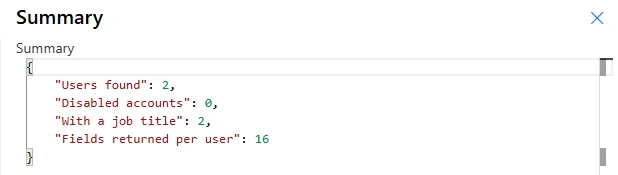

- Power Automate
- Level 9 · Integration and AI · 2 of 10
Office 365 Users: profiles, managers and searches
Many flows need to know something about a person: their display name for an email greeting, their manager for an approval, their department for routing. The Office 365 Users connector reads that from Microsoft Entra ID (the directory behind Microsoft 365). It is a standard connector, so no premium licence is needed.
The actions you'll use most
| Action | Typical use |
|---|---|
| Get my profile (V2) | Details of the person running the flow (or the connection owner). |
| Get user profile (V2) | Details of a given user, by email or ID: name, job title, department, office, phone. |
| Get manager (V2) | The user's manager. The basis of "send to my manager" approvals. |
| Get direct reports (V2) | Everyone who reports to a user. |
| Search for users (V2) | Find people whose name or email starts with a term. |
A search and a few counts
The demo runs Search for users (V2), then two Filter array steps: accounts that are disabled, and accounts with a job title filled in. To keep real names off this page, the flow returns counts only:

@equals(item()?['AccountEnabled'], false)| Piece | What it does |
|---|---|
item() | The user being checked by Filter array. |
?['AccountEnabled'] | False for people who have left or been blocked. Check this before assigning work to someone. |
Getting a manager safely
Get manager fails when the user has no manager (for example a CEO or a test account). Put it in a Scope with a fallback, or set Configure run after on the next step to include has failed and send to a default approver instead.
coalesce(outputs('Get_manager_(V2)')?['body/mail'], 'approvals@contoso.com')| Piece | What it does |
|---|---|
outputs('Get_manager_(V2)')?['body/mail'] | The manager's email, or null if the action failed. |
coalesce(a, b) | Returns the first value that isn't null: the fallback mailbox if there is no manager. |
New to this? Start from the basics optional
Directory: the list of every person and group in your organisation, kept in Microsoft Entra ID.
UPN (user principal name): the sign-in name, which usually looks like an email address. Most actions accept it as the user ID.
Build it step by step optional
- Add Get user profile (V2) and pass an email from the trigger, such as Created By Email.
- Use
body/displayName,body/jobTitleorbody/departmentin later steps. - For approvals, add Get manager (V2) with the same email, and plan a fallback for users without a manager.
- To search, use Search for users (V2) with a term and a Top value, then Filter array on
AccountEnabled.
Common mistakes
- Calling Get user profile inside a loop for the same few people. Look each person up once and reuse the result.
- Assuming everyone has a manager or a department filled in.
- Writing names or emails into logs and screenshots that others can see.